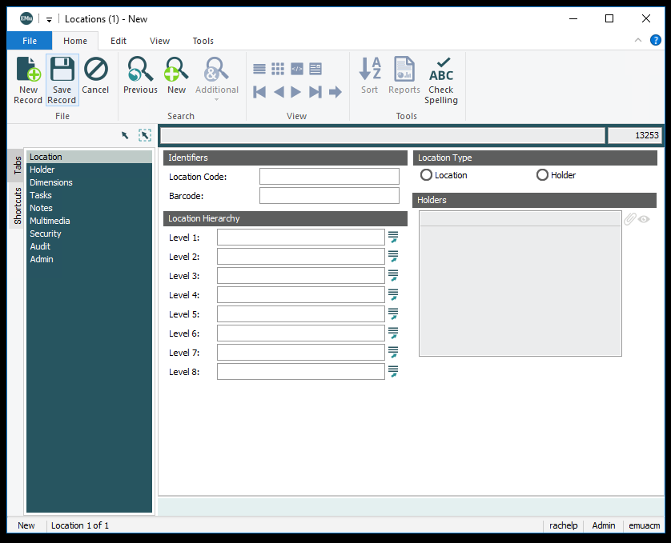
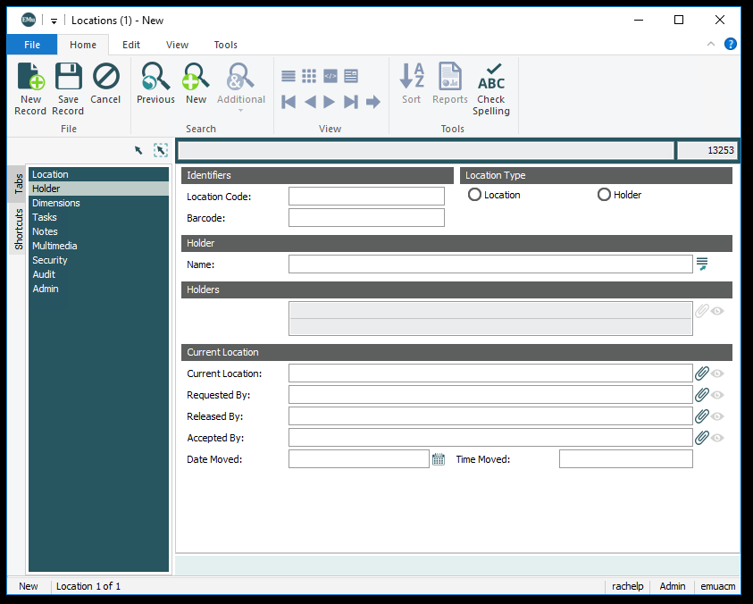
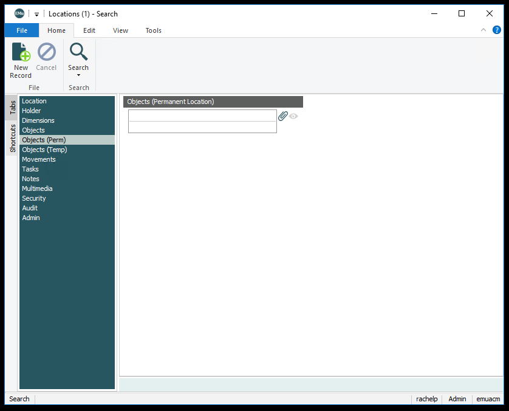

Locations
Location
Location Code
Internally assigned number or code to identify the location.
Location Type
Choose between location and holder. Holders refer to locations within other locations. For example, a box on a shelf.
Level 1
Most general location level.
- Offsite
- On View
- Research Collection (not owned by ACMAA)
- Storage
Level 2
- Archives
- Atrium North Landing
- Atrium South Landing
- Cold Storage
- Conservation
- Cool Storage
- Deaccessioned
- Destroyed
- Electronic Media
- Freezer
- Gallery 1
- Gallery 2
- Gallery 3
- Gallery 4
- Gallery 5
- Gallery 6
- Gallery 7
- Gallery 8
- Gallery 9
- Gallery 10
- Gallery 11
- Gallery 12
- Gallery 13
- Gallery 14
- Gallery 15
- Gallery 16
- Incoming Loan
- Library
- Loan Cancelled
- Lost
- Main Vault
- Mezzanine
- Off Premises
- Outgoing Loan
- Photo Studio
- Plaza
- Receiving Vault
- Research Collection
- Returned
- Storage
- Study Room
- Temp Vault
- Unknown
- Vestibule
Level 3
- 1
- 2
- 3
- 222
- A-Frame
- ACM
- Bin Box
- Bin Box 1
- Brininstool Folder
- Cabinet
- Cart
- Dallas Museum of Art
- Displays
- File Cabinet
- Kimbell Art Museum
- Main Stacks
- Main Vault
- Map Case
- Perry Huston Associates
- Rack
- Rare Books
- Reading Room
- Sculpture Cabinet
- Shelving Unit
- Stairwell
- Worktable
Level 4
The cabinet, shelf or mapcase number. Number 1-142.
Level 5
Used to indicate shelf letter, side of rack or if it is a file cabinet drawer.
- A-Z
- North, South, East, West
- Drawer, Shelf, Top of Case .
Level 6
Drawer number or cabinet letter identification.
Holder
Name
The fullname of the holder, e.g. Porter B&W Negatives. This is a drop down menu, so please use this to define collections or groups of holders, if possible include collection name.
Current Location
Links to Locations Module. The location in which the holder can be found.
Requested By
Links to Parties Module. The person who requested the movement of the holder.
Released By
Links to Parties Module. The person who released the holder for movement.
Accepted By
Links to Parties Module. The person who accepted the holder after movement.
Date Moved
The date on which the holder was moved
Time Moved
The time at which the holder was moved.
Objects

Links to Catalogue Module. All objects currently attached to location through the Catalogue Module.
Objects (Perm)
Links to Catalogue Module. All objects attached to location through permanent location field in the Catalogue Module.
Movements
Links to Internal Movements Modules. All internal movements attached to the location through the Internal Movements Module.
Notes
Optional tab. Used to provide clarification and description for new spaces or locations.
Security
Tracks whether locations are active or retired. To keep location history, locations are not deleted. They are instead marked as retired in the record status field.
Tabs not currently used:
- Dimensions
- Objects (Temp)
- Multimedia
- Tasks
Examples:
MV.CAB.8.H
- Level 1: Storage
- Level 2: Main Vault
- Level 3: Cabinet
- Level 4: 8
- Level 5: Shelf
- Level 6: H
COLD.MC.1.4
- Level 1: Storage
- Level 2: Cold Storage
- Level 3: Map Case
- Level 4: 1
- Level 5: Drawer
- Level 6: 4
Conservation KAM
- Level 1: Offsite
- Level 2: Conservation
- Level 3: Kimbell Art Museum
GAL-5
- Level 1: On View
- Level 2: Gallery 5